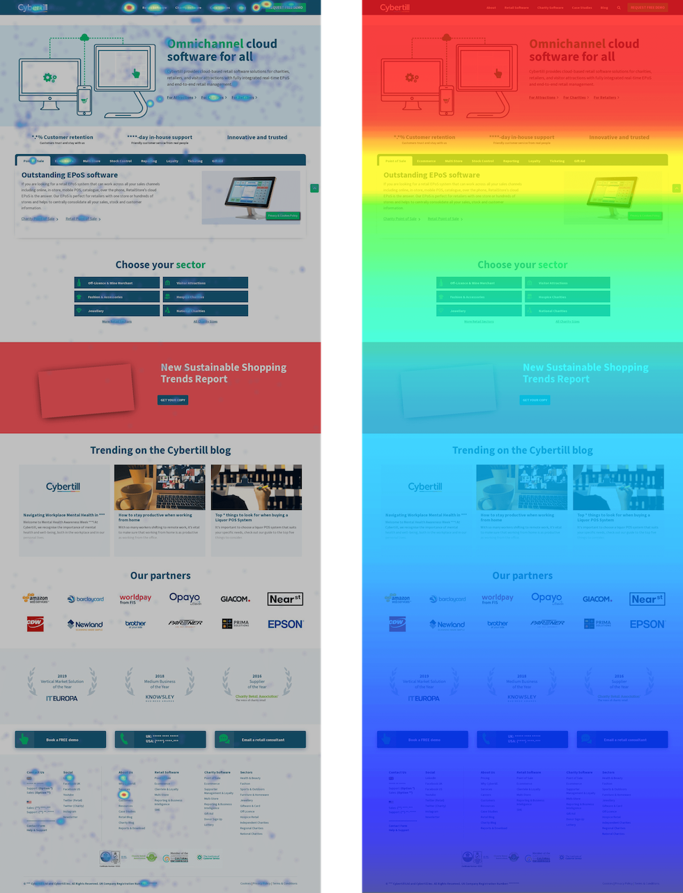
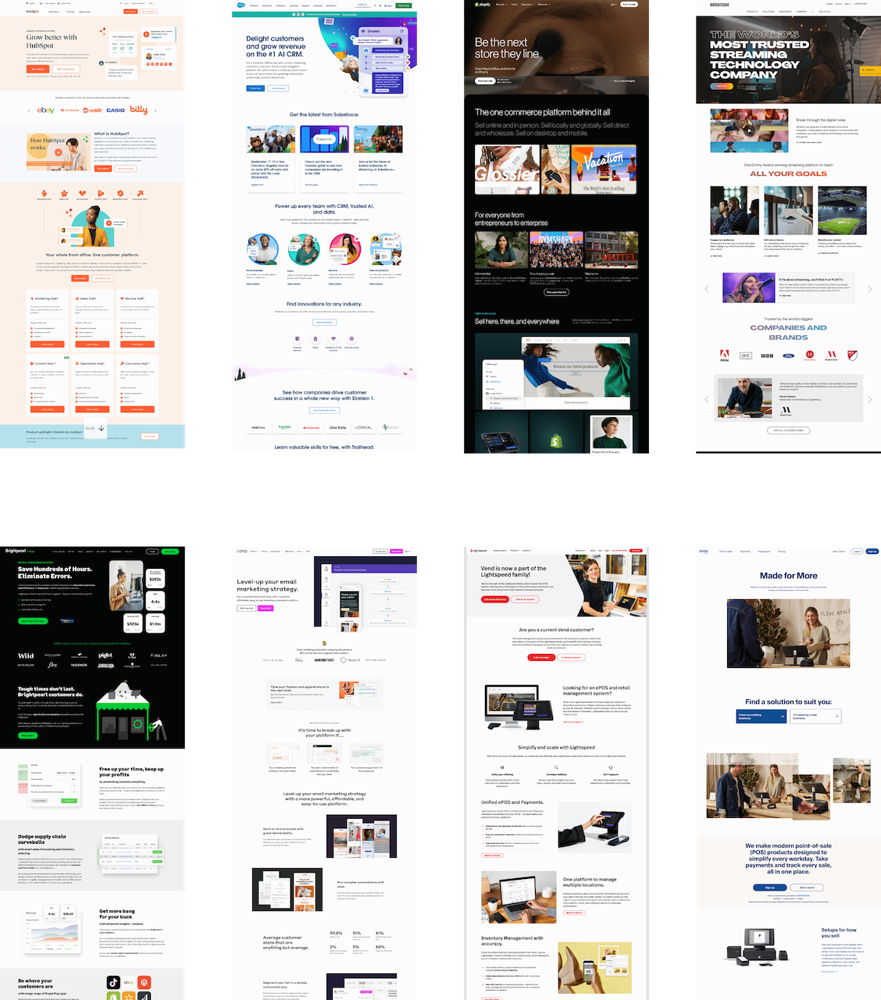
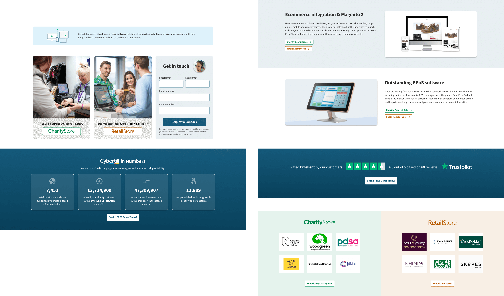
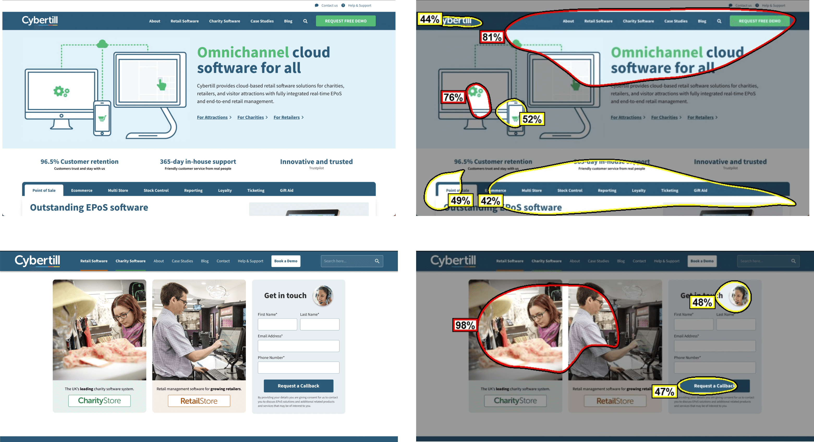
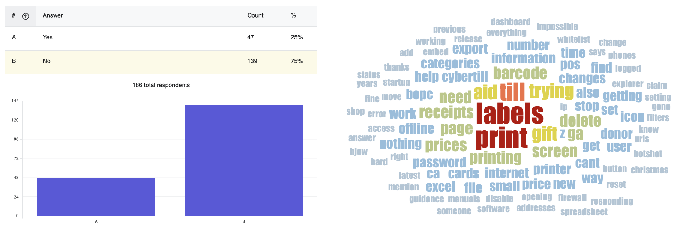
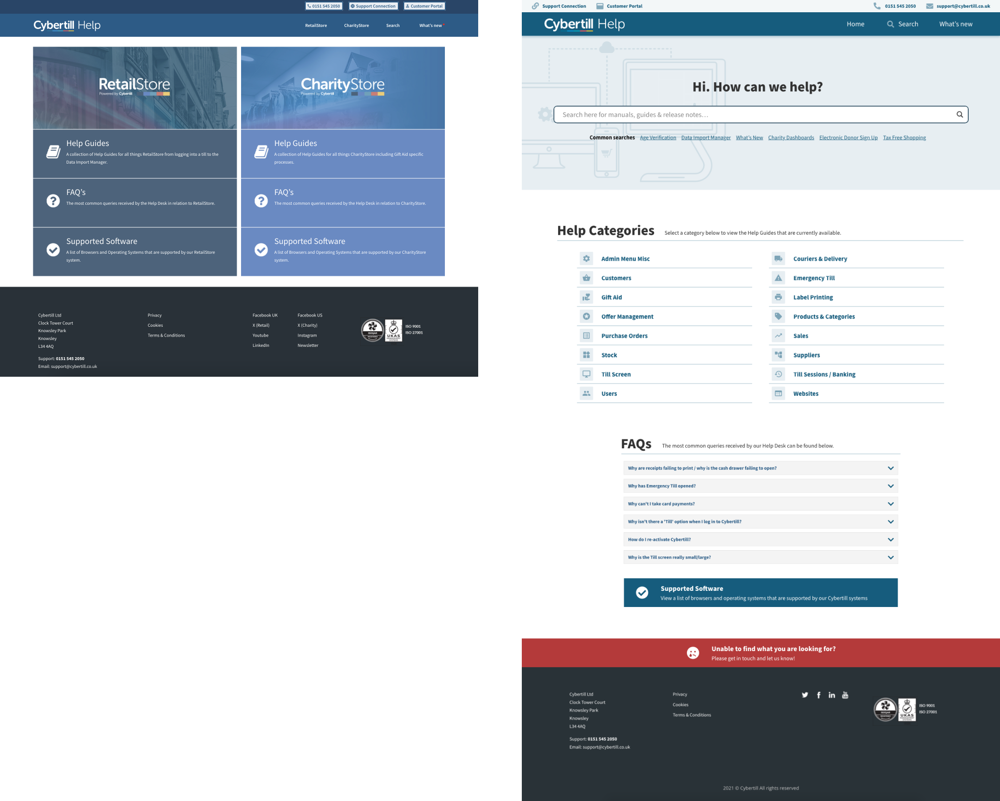

Cybertill Marketing & Help Website Updates
Identifying Opportunities for Improvement
The Cybertill marketing and help websites were key touchpoints for customers, but there was room for improvement in usability and engagement. With Hotjar data implemented before the project began, we had valuable insights into user behaviour, including click maps and scroll depths. These helped us identify areas that required optimisation, from navigation to content structure.
Data-Driven Redesign of the Marketing Website
For the marketing site, I collaborated with the marketing team to analyse competitor websites and understand the expectations of our target audience. Using Hotjar insights, we restructured the homepage to emphasise Cybertill’s unique selling points (USPs). We replaced the tabbed sections with a scrollable format to improve content discoverability and ensure search engines could crawl the page effectively.
Showcasing Value Through Design
We introduced more human-centric imagery, real-world data, customer logos, and testimonials to build trust and clearly communicate Cybertill’s value. Additionally, the contact form was streamlined with fewer fields and a visible, approachable design that included a face at the top, which according to our VAS AI evaluation would help direct users to the correct software or request to be contacted.
 Streamlining the Help Centre
The help website redesign addressed navigation issues and search functionality, which were critical for users seeking documentation. Alongside Hotjar analysis, we used exit surveys to gather feedback directly from users about their challenges. One key finding was inconsistent terminology, where users used synonyms like "labels," "stickers," or "receipts" for the same item, leading to difficulties in locating resources.
Enhancing Search & Navigation
To address these issues, we revamped the search functionality, tagging manuals with synonyms to ensure relevant results. The homepage proposal was to simplify it, making the search bar the central focus to guide users quickly to the content they needed.
User-Centred Iteration & Results
Throughout both projects, user feedback and data drove every decision. We tested iterations with stakeholders and implemented UX principles to ensure a clean, cohesive user experience. The updates to both websites not only improved usability but also supported Cybertill’s overall business goals by increasing customer satisfaction and engagement.